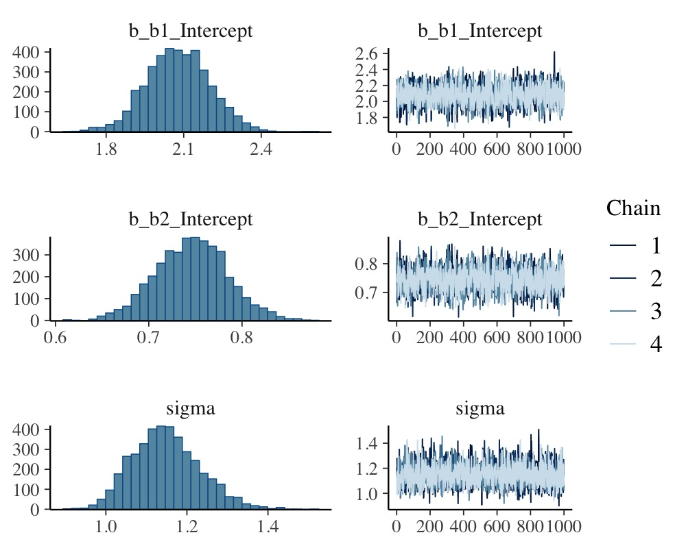
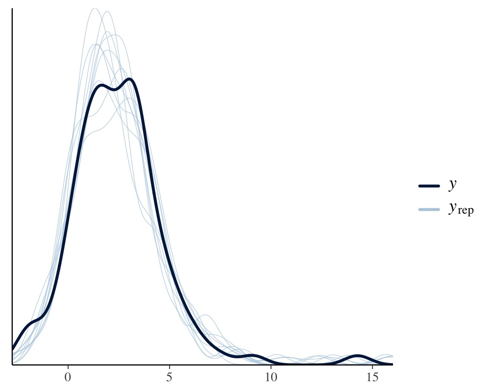
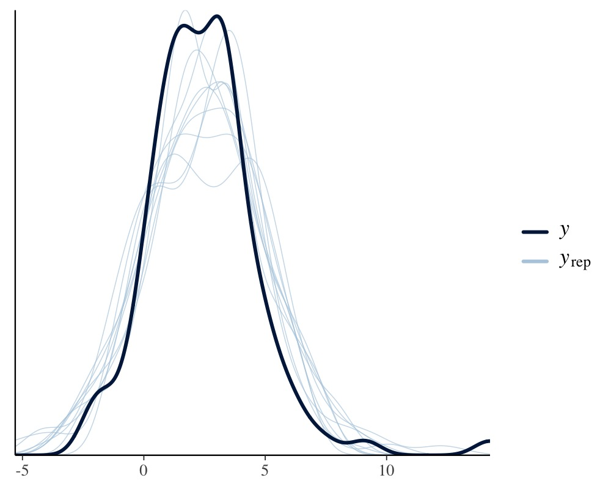
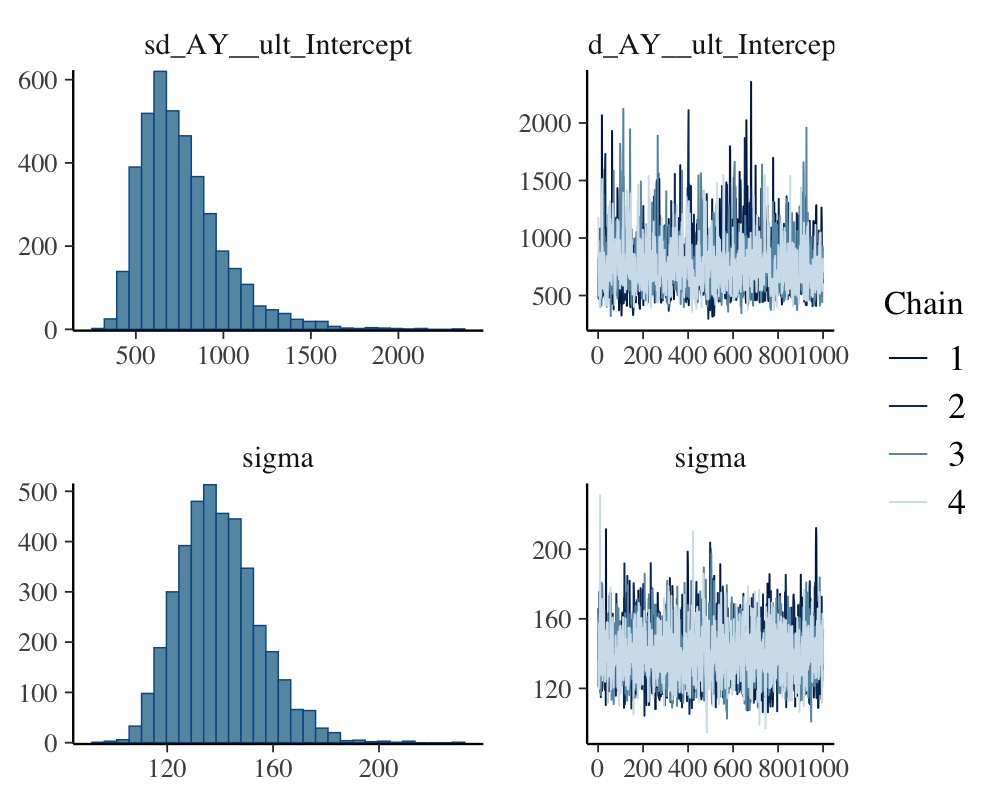
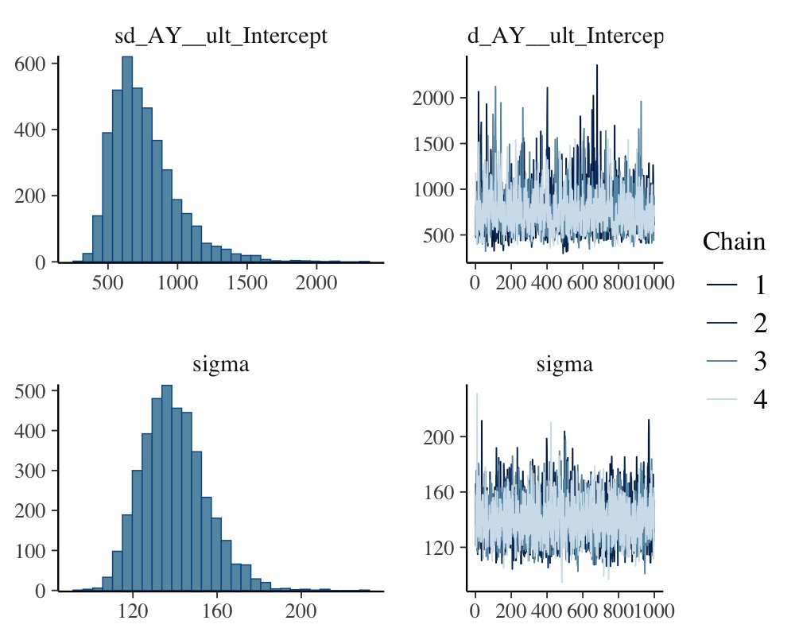
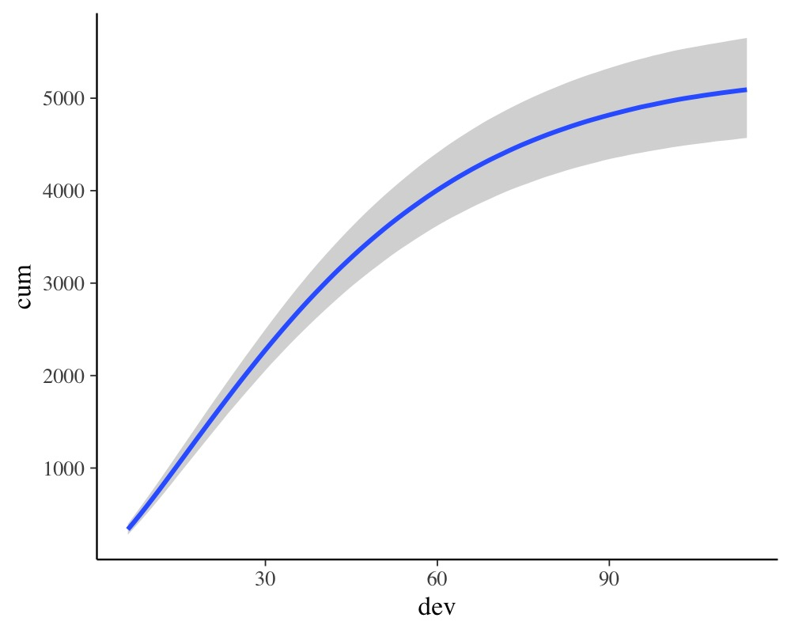
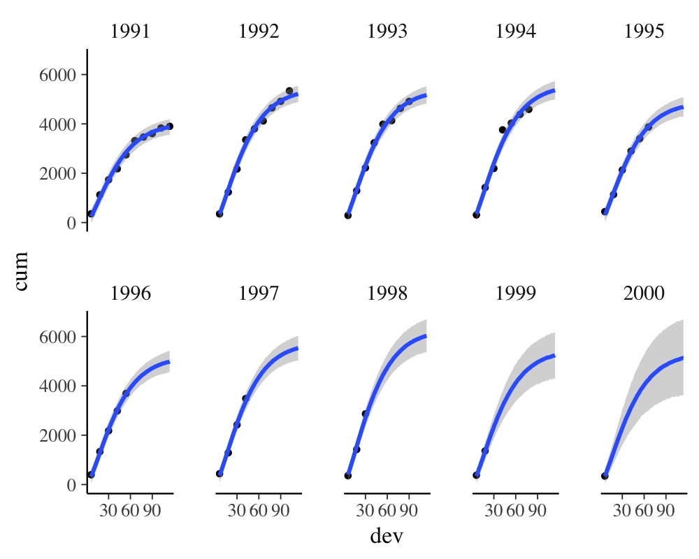
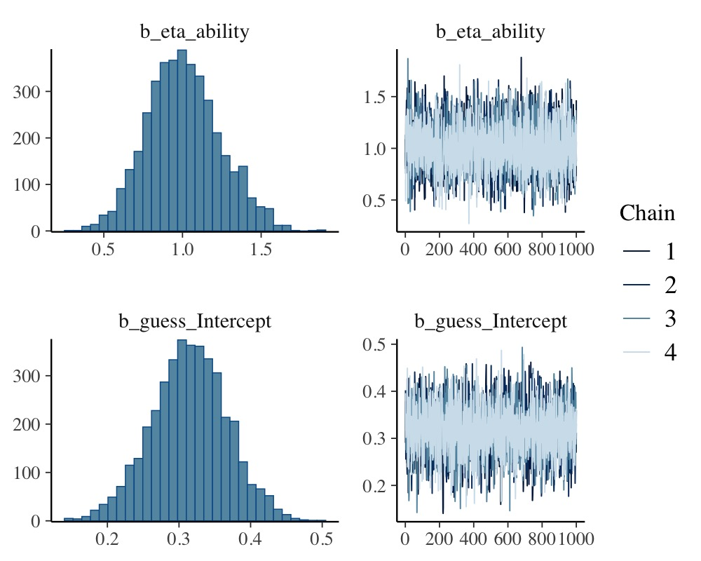

Estimating Non-Linear Models with brms
Paul Bürkner
2020-01-11
Source:vignettes/brms_nonlinear.Rmd
brms_nonlinear.RmdIntroduction
This vignette provides an introduction on how to fit non-linear multilevel models with brms. Non-linear models are incredibly flexible and powerful, but require much more care with respect to model specification and priors than typical generalized linear models. Ignoring group-level effects for the moment, the predictor term \(\eta_n\) of a generalized linear model for observation \(n\) can be written as follows:
\[\eta_n = \sum_{i = 1}^K b_i x_{ni}\]
where \(b_i\) is the regression coefficient of predictor \(i\) and \(x_{ni}\) is the data of predictor \(i\) for observation \(n\). This also compromises interaction terms and various other data transformations. However, the structure of \(\eta_n\) is always linear in the sense that the regression coefficients \(b_i\) are multiplied by some predictor values and then summed up. This implies that the hypothetical predictor term
\[\eta_n = b_1 \exp(b_2 x_n)\]
would not be a linear predictor anymore and we could not fit it using classical techniques of generalized linear models. We thus need a more general model class, which we will call non-linear models. Note that the term ‘non-linear’ does not say anything about the assumed distribution of the response variable. In particular it does not mean ‘not normally distributed’ as we can apply non-linear predictor terms to all kinds of response distributions (for more details on response distributions available in brms see vignette("brms_families")).
A Simple Non-Linear Model
We begin with a simple example using simulated data.
b <- c(2, 0.75)
x <- rnorm(100)
y <- rnorm(100, mean = b[1] * exp(b[2] * x))
dat1 <- data.frame(x, y)As stated above, we cannot use a generalized linear model to estimate \(b\) so we go ahead an specify a non-linear model.
prior1 <- prior(normal(1, 2), nlpar = "b1") +
prior(normal(0, 2), nlpar = "b2")
fit1 <- brm(bf(y ~ b1 * exp(b2 * x), b1 + b2 ~ 1, nl = TRUE),
data = dat1, prior = prior1)When looking at the above code, the first thing that becomes obvious is that we changed the formula syntax to display the non-linear formula including predictors (i.e., x) and parameters (i.e., b1 and b2) wrapped in a call to bf. This stands in contrast to classical R formulas, where only predictors are given and parameters are implicit. The argument b1 + b2 ~ 1 serves two purposes. First, it provides information, which variables in formula are parameters, and second, it specifies the linear predictor terms for each parameter. In fact, we should think of non-linear parameters as placeholders for linear predictor terms rather than as parameters themselves (see also the following examples). In the present case, we have no further variables to predict b1 and b2 and thus we just fit intercepts that represent our estimates of \(b_1\) and \(b_2\) in the model equation above. The formula b1 + b2 ~ 1 is a short form of b1 ~ 1, b2 ~ 1 that can be used if multiple non-linear parameters share the same formula. Setting nl = TRUE tells brms that the formula should be treated as non-linear.
In contrast to generalized linear models, priors on population-level parameters (i.e., ‘fixed effects’) are often mandatory to identify a non-linear model. Thus, brms requires the user to explicitely specify these priors. In the present example, we used a normal(1, 2) prior on (the population-level intercept of) b1, while we used a normal(0, 2) prior on (the population-level intercept of) b2. Setting priors is a non-trivial task in all kinds of models, especially in non-linear models, so you should always invest some time to think of appropriate priors. Quite often, you may be forced to change your priors after fitting a non-linear model for the first time, when you observe different MCMC chains converging to different posterior regions. This is a clear sign of an idenfication problem and one solution is to set stronger (i.e., more narrow) priors.
To obtain summaries of the fitted model, we apply
Family: gaussian
Links: mu = identity; sigma = identity
Formula: y ~ b1 * exp(b2 * x)
b1 ~ 1
b2 ~ 1
Data: dat1 (Number of observations: 100)
Samples: 4 chains, each with iter = 2000; warmup = 1000; thin = 1;
total post-warmup samples = 4000
Population-Level Effects:
Estimate Est.Error l-95% CI u-95% CI Rhat Bulk_ESS Tail_ESS
b1_Intercept 1.86 0.12 1.63 2.08 1.00 1503 1490
b2_Intercept 0.77 0.05 0.68 0.87 1.00 1466 1631
Family Specific Parameters:
Estimate Est.Error l-95% CI u-95% CI Rhat Bulk_ESS Tail_ESS
sigma 1.03 0.07 0.90 1.18 1.00 2584 2289
Samples were drawn using sampling(NUTS). For each parameter, Eff.Sample
is a crude measure of effective sample size, and Rhat is the potential
scale reduction factor on split chains (at convergence, Rhat = 1).

The summary method reveals that we were able to recover the true parameter values pretty nicely. According to the plot method, our MCMC chains have converged well and to the same posterior. The conditional_effects method visualizes the model-implied (non-linear) regression line.
We might be also interested in comparing our non-linear model to a classical linear model.
Family: gaussian
Links: mu = identity; sigma = identity
Formula: y ~ x
Data: dat1 (Number of observations: 100)
Samples: 4 chains, each with iter = 2000; warmup = 1000; thin = 1;
total post-warmup samples = 4000
Population-Level Effects:
Estimate Est.Error l-95% CI u-95% CI Rhat Bulk_ESS Tail_ESS
Intercept 2.42 0.13 2.18 2.67 1.00 3795 2914
x 1.68 0.12 1.45 1.92 1.00 3867 2638
Family Specific Parameters:
Estimate Est.Error l-95% CI u-95% CI Rhat Bulk_ESS Tail_ESS
sigma 1.25 0.09 1.09 1.44 1.00 3256 2740
Samples were drawn using sampling(NUTS). For each parameter, Eff.Sample
is a crude measure of effective sample size, and Rhat is the potential
scale reduction factor on split chains (at convergence, Rhat = 1).To investigate and compare model fit, we can apply graphical posterior predictive checks, which make use of the bayesplot package on the backend.


We can also easily compare model fit using leave-one-out cross-validation.
Output of model 'fit1':
Computed from 4000 by 100 log-likelihood matrix
Estimate SE
elpd_loo -145.1 6.9
p_loo 2.5 0.4
looic 290.3 13.8
------
Monte Carlo SE of elpd_loo is 0.0.
All Pareto k estimates are good (k < 0.5).
See help('pareto-k-diagnostic') for details.
Output of model 'fit2':
Computed from 4000 by 100 log-likelihood matrix
Estimate SE
elpd_loo -165.0 7.0
p_loo 3.4 0.7
looic 330.1 14.1
------
Monte Carlo SE of elpd_loo is 0.0.
All Pareto k estimates are good (k < 0.5).
See help('pareto-k-diagnostic') for details.
Model comparisons:
elpd_diff se_diff
fit1 0.0 0.0
fit2 -19.9 6.5 Since smaller LOOIC values indicate better model fit, it is immediately evident that the non-linear model fits the data better, which is of course not too surpirsing since we simulated the data from exactly that model.
A Real-World Non-Linear model
On his blog, Markus Gesmann predicts the growth of cumulative insurance loss payments over time, originated from different origin years (see http://www.magesblog.com/post/2015/11/loss-developments-via-growth-curves-and.html). We will use a slightly simplified version of his model for demonstration purposes here. It looks as follows:
\[cum_{AY, dev} \sim N(\mu_{AY, dev}, \sigma)\] \[\mu_{AY, dev} = ult_{AY} \left(1 - \exp\left(- \left( \frac{dev}{\theta} \right)^\omega \right) \right)\]
The cumulative insurance payments \(cum\) will grow over time, and we model this dependency using the variable \(dev\). Further, \(ult_{AY}\) is the (to be estimated) ultimate loss of accident each year. It constitutes a non-linear parameter in our framework along with the parameters \(\theta\) and \(\omega\), which are responsible for the growth of the cumulative loss and are assumed to be the same across years. We load the data
AY dev cum premium
1 1991 6 357.848 10000
2 1991 18 1124.788 10000
3 1991 30 1735.330 10000
4 1991 42 2182.708 10000
5 1991 54 2745.596 10000
6 1991 66 3319.994 10000and translate the proposed model into a non-linear brms model.
fit_loss <- brm(
bf(cum ~ ult * (1 - exp(-(dev/theta)^omega)),
ult ~ 1 + (1|AY), omega ~ 1, theta ~ 1,
nl = TRUE),
data = loss, family = gaussian(),
prior = c(
prior(normal(5000, 1000), nlpar = "ult"),
prior(normal(1, 2), nlpar = "omega"),
prior(normal(45, 10), nlpar = "theta")
),
control = list(adapt_delta = 0.9)
)We estimate a group-level effect of accident year (variable AY) for the ultimate loss ult. This also shows nicely how a non-linear parameter is actually a placeholder for a linear predictor, which in case of ult, contains only an varying intercept over year. Again, priors on population-level effects are required and, for the present model, are actually mandatory to ensure identifiability. We summarize the model using well known methods.
Family: gaussian
Links: mu = identity; sigma = identity
Formula: cum ~ ult * (1 - exp(-(dev/theta)^omega))
ult ~ 1 + (1 | AY)
omega ~ 1
theta ~ 1
Data: loss (Number of observations: 55)
Samples: 4 chains, each with iter = 2000; warmup = 1000; thin = 1;
total post-warmup samples = 4000
Group-Level Effects:
~AY (Number of levels: 10)
Estimate Est.Error l-95% CI u-95% CI Rhat Bulk_ESS Tail_ESS
sd(ult_Intercept) 732.69 215.24 419.12 1263.69 1.00 1210 1960
Population-Level Effects:
Estimate Est.Error l-95% CI u-95% CI Rhat Bulk_ESS Tail_ESS
ult_Intercept 5305.84 293.88 4738.54 5906.00 1.00 1040 1319
omega_Intercept 1.33 0.05 1.23 1.43 1.00 2615 2287
theta_Intercept 46.29 2.29 42.37 51.23 1.00 2437 1977
Family Specific Parameters:
Estimate Est.Error l-95% CI u-95% CI Rhat Bulk_ESS Tail_ESS
sigma 140.84 15.97 114.63 175.94 1.00 2351 2254
Samples were drawn using sampling(NUTS). For each parameter, Eff.Sample
is a crude measure of effective sample size, and Rhat is the potential
scale reduction factor on split chains (at convergence, Rhat = 1). 


Next, we show marginal effects separately for each year.
conditions <- data.frame(AY = unique(loss$AY))
rownames(conditions) <- unique(loss$AY)
me_loss <- conditional_effects(
fit_loss, conditions = conditions,
re_formula = NULL, method = "predict"
)
plot(me_loss, ncol = 5, points = TRUE)
It is evident that there is some variation in cumulative loss across accident years, for instance due to natural disasters happening only in certain years. Further, we see that the uncertainty in the predicted cumulative loss is larger for later years with fewer available data points.
Advanced Item-Response Models
As a third example, we want to show how to model more advanced item-response models using the non-linear model framework of brms. For simplicity, suppose we have a single forced choice item with three alternatives of which only one is correct. Our response variable is whether a person answers the item correctly (1) or not (0). Person are assumed to vary in their ability to answer the item correctly. However, every person has a 33% chance of getting the item right just by guessing. We thus simulate some data to reflect this situation.
inv_logit <- function(x) 1 / (1 + exp(-x))
ability <- rnorm(300)
p <- 0.33 + 0.67 * inv_logit(ability)
answer <- ifelse(runif(300, 0, 1) < p, 1, 0)
dat_ir <- data.frame(ability, answer)The most basic item-response model is equivalent to a simple logistic regression model.
However, this model completely ignores the guessing probability and will thus likely come to biased estimates and predictions.
Family: bernoulli
Links: mu = logit
Formula: answer ~ ability
Data: dat_ir (Number of observations: 300)
Samples: 4 chains, each with iter = 2000; warmup = 1000; thin = 1;
total post-warmup samples = 4000
Population-Level Effects:
Estimate Est.Error l-95% CI u-95% CI Rhat Bulk_ESS Tail_ESS
Intercept 0.76 0.13 0.51 1.02 1.00 3519 2774
ability 0.59 0.14 0.32 0.86 1.00 3044 2608
Samples were drawn using sampling(NUTS). For each parameter, Eff.Sample
is a crude measure of effective sample size, and Rhat is the potential
scale reduction factor on split chains (at convergence, Rhat = 1).
A more sophisticated approach incorporating the guessing probability looks as follows:
fit_ir2 <- brm(
bf(answer ~ 0.33 + 0.67 * inv_logit(eta),
eta ~ ability, nl = TRUE),
data = dat_ir, family = bernoulli("identity"),
prior = prior(normal(0, 5), nlpar = "eta")
)It is very important to set the link function of the bernoulli family to identity or else we will apply two link functions. This is because our non-linear predictor term already contains the desired link function (0.33 + 0.67 * inv_logit), but the bernoulli family applies the default logit link on top of it. This will of course lead to strange and uninterpretable results. Thus, please make sure that you set the link function to identity, whenever your non-linear predictor term already contains the desired link function.
Family: bernoulli
Links: mu = identity
Formula: answer ~ 0.33 + 0.67 * inv_logit(eta)
eta ~ ability
Data: dat_ir (Number of observations: 300)
Samples: 4 chains, each with iter = 2000; warmup = 1000; thin = 1;
total post-warmup samples = 4000
Population-Level Effects:
Estimate Est.Error l-95% CI u-95% CI Rhat Bulk_ESS Tail_ESS
eta_Intercept 0.03 0.18 -0.32 0.36 1.00 2879 2388
eta_ability 0.78 0.20 0.41 1.19 1.00 3324 2550
Samples were drawn using sampling(NUTS). For each parameter, Eff.Sample
is a crude measure of effective sample size, and Rhat is the potential
scale reduction factor on split chains (at convergence, Rhat = 1).
Comparing model fit via leave-one-out cross-validation
Output of model 'fit_ir1':
Computed from 4000 by 300 log-likelihood matrix
Estimate SE
elpd_loo -183.0 7.1
p_loo 2.1 0.2
looic 365.9 14.3
------
Monte Carlo SE of elpd_loo is 0.0.
All Pareto k estimates are good (k < 0.5).
See help('pareto-k-diagnostic') for details.
Output of model 'fit_ir2':
Computed from 4000 by 300 log-likelihood matrix
Estimate SE
elpd_loo -183.5 7.0
p_loo 2.0 0.2
looic 367.0 14.1
------
Monte Carlo SE of elpd_loo is 0.0.
All Pareto k estimates are good (k < 0.5).
See help('pareto-k-diagnostic') for details.
Model comparisons:
elpd_diff se_diff
fit_ir1 0.0 0.0
fit_ir2 -0.5 0.7 shows that both model fit the data equally well, but remember that predictions of the first model might still be misleading as they may well be below the guessing probability for low ability values. Now, suppose that we don’t know the guessing probability and want to estimate it from the data. This can easily be done changing the previous model just a bit.
fit_ir3 <- brm(
bf(answer ~ guess + (1 - guess) * inv_logit(eta),
eta ~ 0 + ability, guess ~ 1, nl = TRUE),
data = dat_ir, family = bernoulli("identity"),
prior = c(
prior(normal(0, 5), nlpar = "eta"),
prior(beta(1, 1), nlpar = "guess", lb = 0, ub = 1)
)
)Here, we model the guessing probability as a non-linear parameter making sure that it cannot exceed the interval \([0, 1]\). We did not estimate an intercept for eta, as this will lead to a bias in the estimated guessing parameter (try it out; this is an excellent example of how careful one has to be in non-linear models).
Family: bernoulli
Links: mu = identity
Formula: answer ~ guess + (1 - guess) * inv_logit(eta)
eta ~ 0 + ability
guess ~ 1
Data: dat_ir (Number of observations: 300)
Samples: 4 chains, each with iter = 2000; warmup = 1000; thin = 1;
total post-warmup samples = 4000
Population-Level Effects:
Estimate Est.Error l-95% CI u-95% CI Rhat Bulk_ESS Tail_ESS
eta_ability 0.77 0.20 0.40 1.17 1.00 3211 2793
guess_Intercept 0.33 0.05 0.22 0.43 1.00 3137 2567
Samples were drawn using sampling(NUTS). For each parameter, Eff.Sample
is a crude measure of effective sample size, and Rhat is the potential
scale reduction factor on split chains (at convergence, Rhat = 1).

The results show that we are able to recover the simulated model parameters with this non-linear model. Of course, real item-response data have multiple items so that accounting for item and person variability (e.g., using a multilevel model with varying intercepts) becomes necessary as we have multiple observations per item and person. Luckily, this can all be done within the non-linear framework of brms and I hope that this vignette serves as a good starting point.